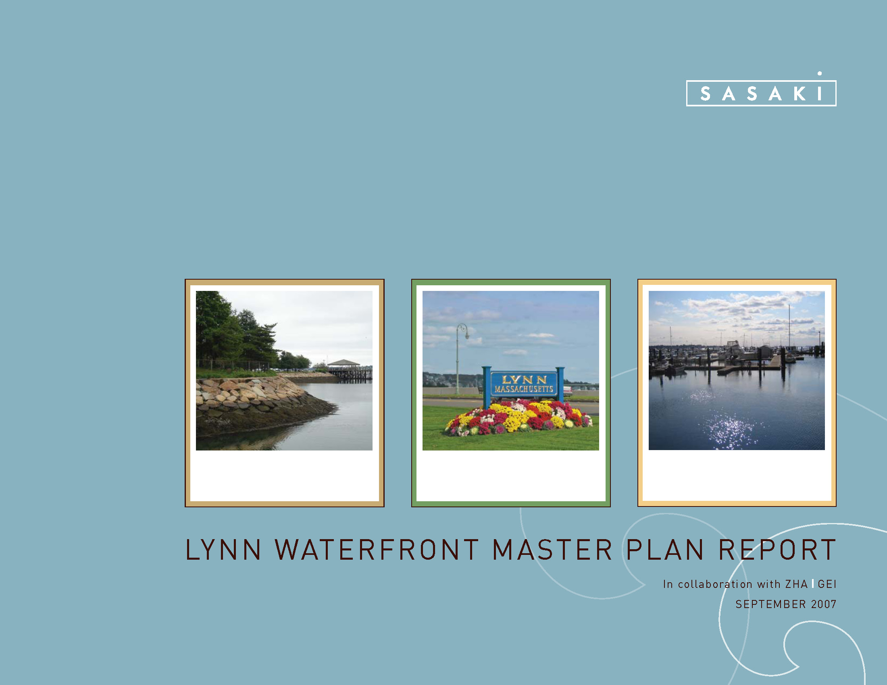
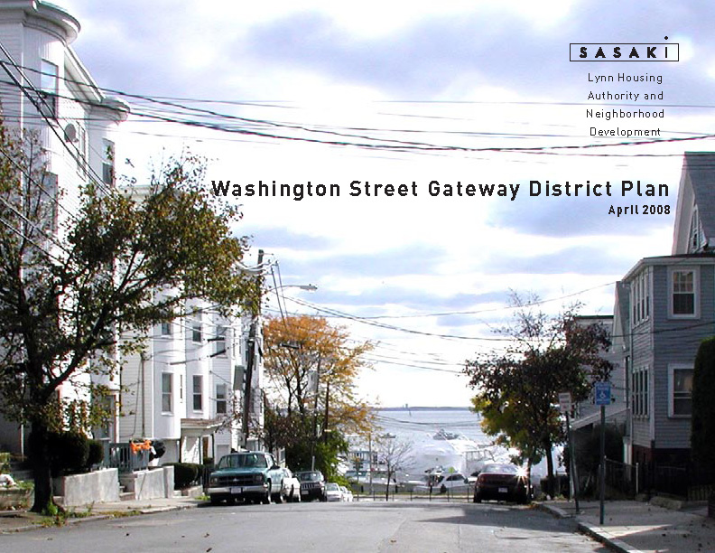
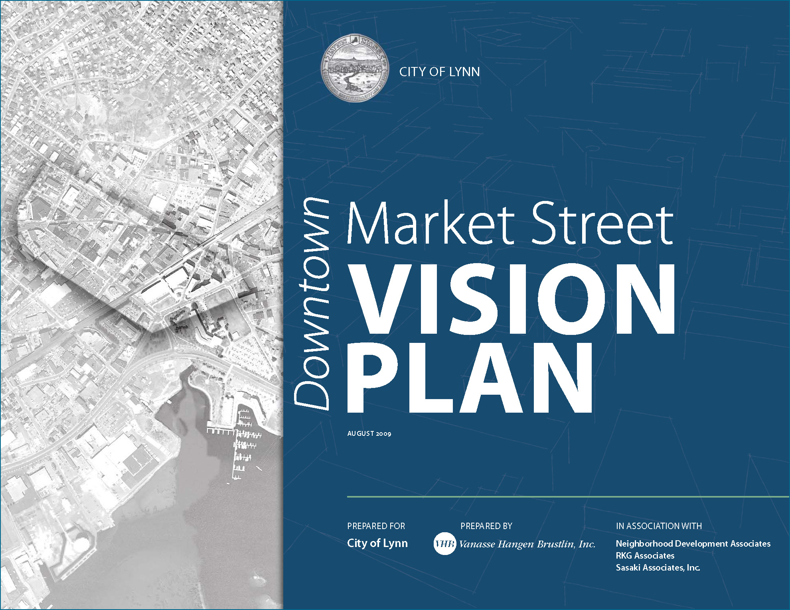
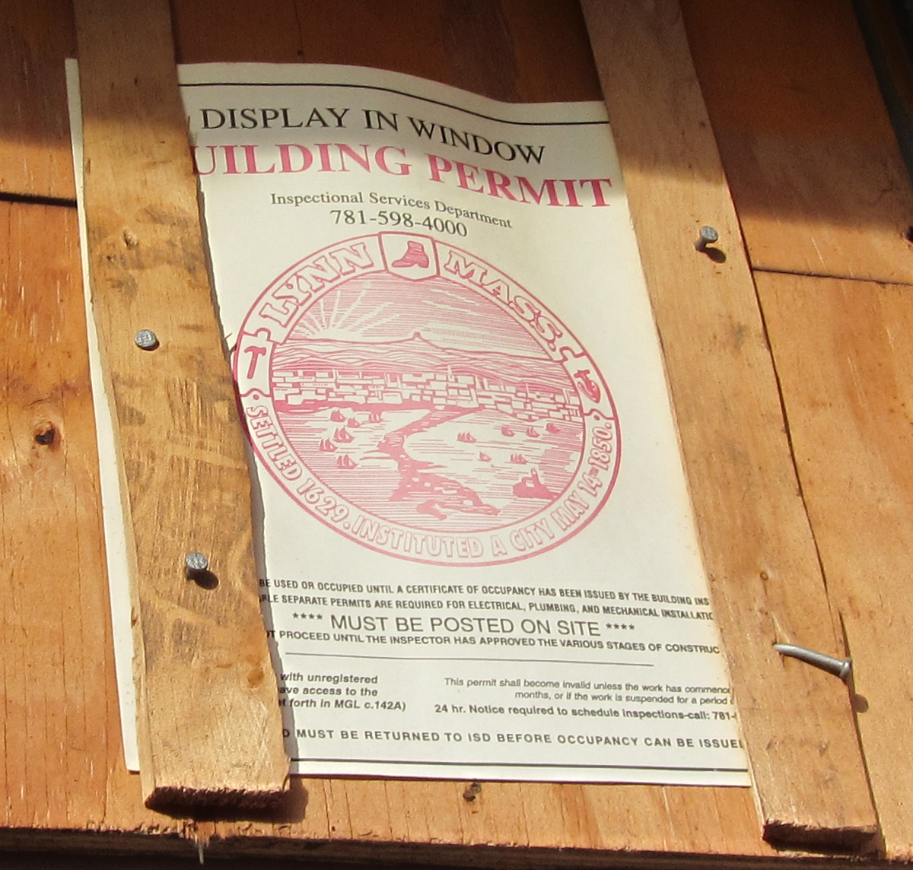
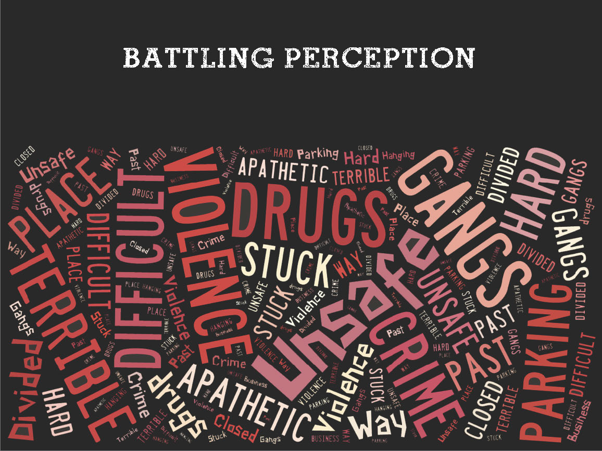
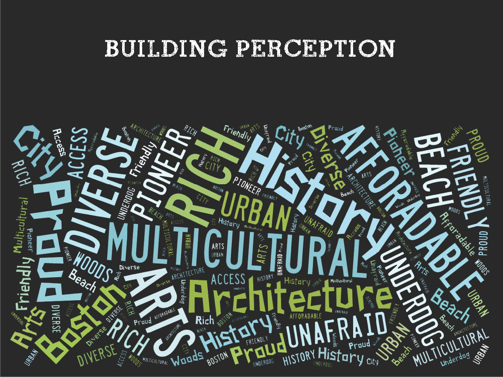
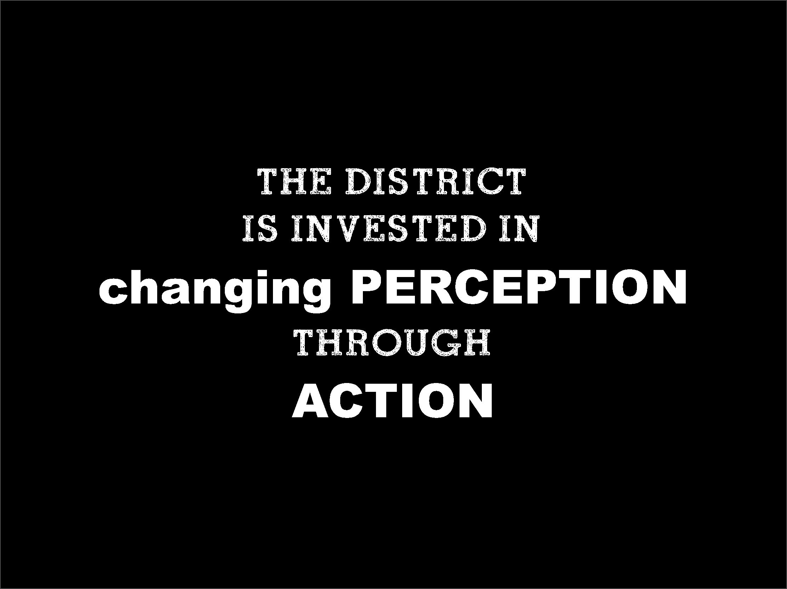
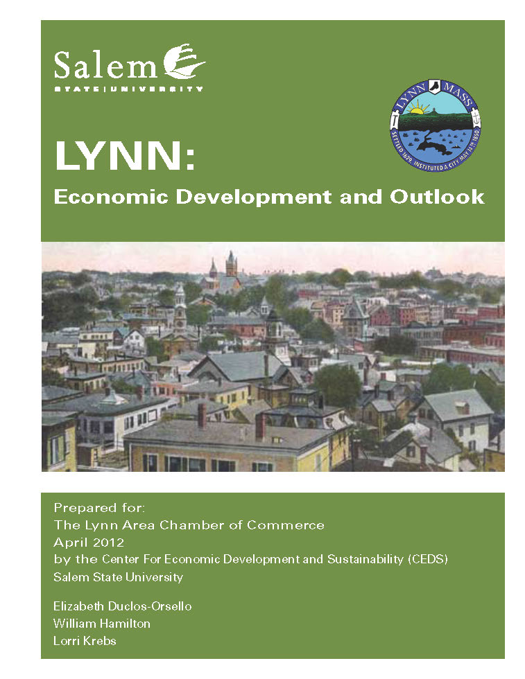
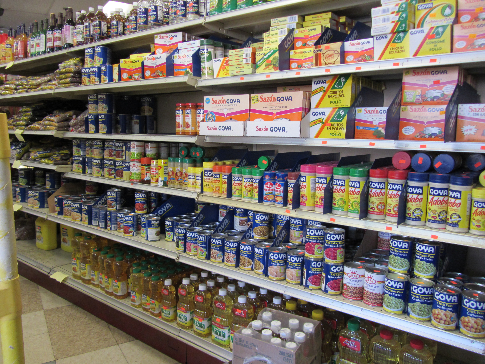

Downtown Planning
Recent planning studies for Downtown, the Waterfront, and citywide economic development strategies helped inform MAPC's understanding of Downtown needs and goals. Many of these studies are available on the Community Planning page of the City of Lynn's Department of Community Development website, and a few are from other sources. Here, we have highlighted key elements from these previous studies to illustrate how they establish the vision for Downtown Lynn; the vision this project intends to build on!
A decade of Downtown and Waterfront planning efforts are chronicled here in order of date published, starting in 2004:
- Lynn Downtown Charrette Plan/Workshop, 2004
- Lynn Economic Development Strategy, 2005
- Open Space and Recreation Plan Update IV, 2005
- Downtown Traffic Study, 2005
- Downtown Parking Study, 2007
- Lynn Waterfront Master Plan Report, 2007
- Washington Street Gateway District Plan, 2008
- Downtown Market Street Vision Plan, 2009
- Economic Development Self Assessment Tool Report, 2011
- Lynn: A Little City with Big Potential, 2011, New Lynn Coalition
- Branding Presentation for the Downtown Lynn Cultural District, 2011
- Lynn: Economic Development and Outlook, 2012
- Lynn Immigrant Business Resources Access Survey, 2012
- LACC Keynote Address on Economic Development by Dr. Barry Bluestone, 2013
This list is not comprehensive of all planning efforts in Lynn, nor does it include every document MAPC reviewed. For additional information on planning efforts in Lynn, useful resources include information on the City's Community Development Block Grant program and the Resource Center page on the Department of Community Development's website, the Economic Development and Industrial Corporation of Lynn website, which includes information on the 2010 Municipal Harbor Plan, planning for the Arts and Cultural District, and other resources, and the Lynn Housing Authority and Neighborhood Development website. MAPC also reviewed documents such as the North Shore Community College 2009-2013 and 2013-2016 Strategic Plans, information from the Lynn Community Health Center, and resources from numerous other organizations serving Downtown. The documents listed below are those that have particular relevance to MAPC's work in Downtown Lynn. Note that the length of description is in many cases related to whether the content is available online; for documents that were only provided to the project team in hardcopy, we have included longer descriptions.
| Lynn Downtown Charrette Plan/Workshop, 2004 | |

Image from the Department of Community Development website, originally from the Lynn Downtown Workshop report by RKG. Click the image to learn more about the 2004 plan. Many of the goals, objectives, and recommendations for Downtown Lynn identified during a stakeholder workshop in 2004 support the vision for Downtown Lynn today, a decade later. Progress since then includes removing Heavy Industrial zoning districts from Downtown and the Waterfront, façade improvements and other public investments, and designation of the Downtown Lynn Cultural District indicates that while work remains, Downtown is heading in the right direction. |
As stated on the Lynn Department of Community Development's website, the Lynn Downtown Charrette Plan by RKG Associates, Inc. and Fox & Fowle Architects, PC "was initiated as a collaborative effort to prepare a redevelopment strategy for the downtown area in July 2004." The consultants held a Stakeholder Workshop on May 26, 2004 to receive community input regarding Downtown Lynn's positive and negative features, urban design and development opportunities, and constraints. Their analysis led to a recommended design strategy, redevelopment approach, and short and long term action plan.
A few of the plan's recommendations and objectives include:
|
| Lynn Economic Development Strategy, 2005 | |

Image from the Department of Community Development website, originally from the Lynn Economic Development Strategy by RKG. Click the image to learn more about the 2005 study. The Economic Development Strategy for Lynn includes citywide recommendations as well as planning goals and projections for targeted redevelopment projects in eight opportunity zones across the City. For Downtown, the strategy includes the same recommendations as those in the Downtown Charrette/Workshop, and further supports these with survey and interview responses from area business owners, employers, and property owners. |
The May 2005 Lynn Economic Development Strategy by RKG Associates, Inc. recommended continuing to build the momentum created by the 2004 charrette and workshop for Downtown. This strategy includes citywide recommendations and specific strategies for eight "economic opportunity zones" including Downtown. The Department of Community Development website has the Appendix for this strategy available online; MAPC obtained a hardcopy of the main report from the City for our review.
The Economic Development Strategy consultant team conducted a survey of business owners and interviewed major employers and property owners, along with analyzing Lynn's tax base, land use, and demographic characteristics. Of the 40 business owners surveyed, 78% indicated "Downtown Revitalization" was a long-term opportunity for the city. Many of the recommendations overlap or build on recommendations made during the 2004 workshop. The strategy included a list of target projects for Downtown for $1.5-3.5 million in short-term investment and $12.7-24.9 million in long-term investments. The projects listed included some that were underway at the time of the study, as well as projects in the pipeline that would add hundreds of new residential units, thousands of new non-residential square feet, dozens of new jobs and millions in new real estate taxes. Some of the recommendations from this strategy include:
|
| Open Space and Recreation Plan Update IV, 2005 | |

Image by the MAPC Project Team, May 2013. Click the image to learn more about the Open Space and Recreation Plan and to download a copy. High Rock Reservation is adjacent to the Downtown Lynn study area. The cover photo for this website was taken from the High Rock Tower, which provides not only a great view of Downtown Lynn, but also of the entire Metro Boston skyline as well as the Lynn Harbor. |
Lynn's Open Space and Recreation Plan Update IV, adopted in July 2005, includes environmental analysis of the City's natural and scenic resources, catalogues land in Lynn of "conservation and recreation interest," and identifies community goals, needs, and a five-year action plan. Open Space and Recreation Plans are required for participation in relevant grant programs offered by the Commonwealth of Massachusetts, and requirements for these plans are detailed by the State's Executive Office of Energy and Environmental Affairs. Lynn is rich with natural beauty and open space protected from development. Downtown is in close proximity to Waterfront amenities such as Lynn Harbor, Harbor Landing, and Lynn Beach, recreational and scenic parks such as Lynn Commons and High Rock Reservation, and includes two playgrounds, the Sagamore Street Playground and the Smith Street Playground. The plan includes maintenance, restoration, equipment, and planting needs for these places and a timeline and funding plan to address those needs. The plan references regional amenities and planning initiatives such as Bike to the Sea and the Essex Coastal Scenic Byway, which both contribute to making Lynn a regional destination. |
| Downtown Traffic Study, 2005 | |
Image of Downtown from the Department of Community Development website; click the image to learn more about the 2005 study. |
A Downtown Traffic Study was completed in November 2005. MAPC did not review this study, but according to the Department of Community Development website, "The purpose of the study was to evaluate the potential impacts of five streets from one-way to two-way orientations." One-way streets and the challenge of navigating Downtown streets is still a commonly referenced issue today. |
| Downtown Parking Study, 2007 | |

Image of Downtown from the Department of Community Development website; click the image to learn more about the 2007 study. This study was conducted following an increase in Downtown's residential population, thanks to new residential condominium and rental units developed as a result of the residential reuse overlay zoning amendment. At the time of the study, there was a surplus of on-street parking spaces as well as capacity in municipal parking lots, but growth in Downtown's population was expected to put more pressure on the available supply of parking spaces. |
The July 2007 Downtown Parking Study by BETA Group, Inc. evaluated parking in the Central Business District following zoning changes to allow residential reuse of existing buildings in the district and the resulting increase in residential condominium and rental units in Downtown. At the time, the City was considering an overnight on-street parking ban in Downtown and wanted to determine whether municipal lots could accommodate overnight parking for residents and their visitors. The study included an inventory of spaces, fees, utilization, safety, parking technology, and management recommendations.
According to the consultants' analysis, existing municipal parking lots were underutilized and could accommodate "all of the overnight on-street parked vehicles observed, as well as the overnight parking generated by future planned residential developments" (BETA Group, page 2). They also recommended lighting, surveillance cameras, and emergency call boxes to reduce the risk of crime and improve the feeling of safety in municipal lots. During daytime hours, the Blake and Spring Street lots approached their capacity but the other municipal lots on Andrew Street, Buffum Street, Ellis Street, and Union Street had surplus parking available at all times. The consultants also noted that on-street parking at the time was underutilized, with 55% of the on-street parking capacity in use during peak hours. To accommodate the anticipated increase in demand and manage parking, BETA Group suggested issuing different types of color-coded parking permits for day, night, and "24/7" parking in the municipal lots and adding meters to on-street spaces in high demand areas. |
| Lynn Waterfront Master Plan Report, 2007 | |
| 
Click the image above to learn more about this plan and to download a copy. The City is committed to investing in its underutilized Waterfront by implementing the recommendations from the Waterfront Master Plan Report. Since adoption of the plan, the City has implemented the necessary zoning changes, relocated power transmission lines away from the Waterfront, and further developed the Seaport Landing Marina. |
The September 2007 Lynn Waterfront Master Plan by Sasaki Associates, Inc.. conducted in collaboration with ZHA for market analysis, GEI for geotechnical expertise, and with the City for hosting public workshops, focuses on the 305-acre development site along the Lynn Waterfront extending from the General Edwards Bridge, north to the intersection of the Lynnway and Market Street, and east to the Nahant rotary. The plan proposes changing this underutilized land from industrial uses into three distinct neighborhood districts: the Gateway Waterfront Neighborhood, the Downtown Waterfront, and Lower Sagamore Hill. These districts would include new residential construction complemented by commercial/retail businesses, offices, and hotel development. Additionally, the plan includes a fourth district called the Marine Park Industry Center, which includes industrial and marine-dependent operations as well as some offices. The plan proposes zoning changes, offers a conceptual land use and urban design plan, and discusses property acquisition and environmental remediation needs. It suggests that phasing for the project, which is dependent on acquisition and environmental remediation, but also developer interest.
The report recommended a review of the Master Plan every five years to ensure its validity and to reflect the City's and community's vision. In addition to the report which is available on various City of Lynn websites, Sasaki Associates has a webpage for the project as well. The Lower Sagamore Hill section of the Waterfront Master Plan is in the MAPC Downtown Lynn study area, and the Downtown Waterfront district is immediately adjacent to the MAPC Downtown Lynn study area. |
| Washington Street Gateway District Plan, 2008 | |
| 
Click the image above to learn more about this plan and to download a copy. The Washington Street Gateway District Plan led to implementation of the Washington Street and Sagamore Hill Corridor Overlay districts. This neighborhood is a key development for LHAND. |
The April 2008 Washington Street Gateway District Plan by Sasaki Associates, Inc. in collaboration with Lynn Housing Authority and Neighborhood Development (LHAND) is a follow-up to the Waterfront Master Plan that provides more detail for the Lower Sagamore Hill district along Washington Street, and references North Shore Community College and Downtown to provide the geographic context for this district. The plan is mostly visual, with concept plans, photographs, renderings, and streetscape section plans. The recommendations for this area include facilitating mixed use development, improving connections between the neighborhood, community college, waterfront and MBTA transit station, promoting accessibility by improving sidewalks and the street pattern, and increasing development from low to moderate density. |
| Downtown Market Street Vision Plan, 2009 | |
| 
Click the image above to learn more about this plan and to download a copy. The Downtown Market Street Vision Plan provides a a series of specific recommendations intended to "revitalize the Market Street gateway into a thriving mixed-use urban community that builds upon the area's assets and ongoing investments in projects and other planning initiatives" (VHB, page 11). If there is a single document that would be "required reading" in order to understand the work MAPC is building on, this is it. |
The August 2009 Downtown Market Street Vision Plan by Vanasse Hangen Brustlin, Inc. (VHB) and in association with Neighborhood Development Associates, RKG Associates, and Sasaki Associates, Inc., was funded by a Gateway Plus Action Grant awarded by the Massachusetts Department of Housing and Community Development (DHCD), and was developed in close collaboration with the City of Lynn Department of Community Development, EDIC, and LHAND. The plan's focus area is the approximately 60 acres bound by Market Street, Broad Street, Washington Street, and Essex Street. The goals of the plan were to upgrade property values in Downtown and to identify land use, zoning, streetscape, and transportation improvements that would stimulate economic investment.
The plan suggests a number of specific urban design improvements to enhance Downtown's appearance, improve streetscaping and landscaping, create gateways, add park space, and make the district more appealing for walking. It also suggests opportunities for infill development, added structured parking, zoning changes, and improve traffic circulation. The action plan on pages 34-35 identifies the following recommendations (the bold headings in the action plan by VHB are listed here verbatim, but refer to the full document for more details):
Most of the plan's observations and recommendations are still relevant today and this document in particular informed MAPC about Downtown development challenges and opportunities. The document recommends tracking implementation progress and periodically reviewing and updating the priorities identified in the plan. |
| Economic Development Self Assessment Tool Report, 2011 | |
| 
Photo of a City of Lynn Building Permit on a building in Downtown, taken by the MAPC Project Team in November 2012. The Lynn EDSAT report investigates Lynn's business friendliness and provides suggestions for the City to streamline permitting, improve collaboration, leverage resources, stimulate redevelopment, improve perceptions, and attract and retain businesses. |
Since 2011, Northeastern University's Dukakis Center for Urban Research and Policy has worked collaboratively with the City of Lynn and area business leaders to evaluate the city's economic development needs.
The July 2011 Economic Development Self Assessment Tool Report (EDSAT) by the Dukakis Center and in partnership with the National League of Cities is a municipal self-assessment of business friendly practices, using a series of questions that businesses consider when evaluating locations. The questions were developed based upon a survey of real estate and location professionals from the National Association of Industrial and Office Properties (NAIOP) , a commercial real estate development association, and CoreNet Global, an association for "corporate real estate (CRE) and workplace professionals, service providers and economic developers" (About Us, CoreNet Global). The Dukakis Center asks municipal officials, business leaders, and civic leaders to "come together as a team for self assessment" (Lynn EDSAT, page 3). Their responses are then compared with nearby municipalities. The report for Lynn was used with permission from Mayor Kennedy's office, as it is not a public document available online. Some highlights from the EDSAT, organized by theme, are noted below. Partnerships and collaboration:
Business attraction, retention, and marketing:
Permitting:
Property conditions and redevelopment:
Location advantages:
Resources to improve transportation conditions:
|
| Lynn: A Little City with Big Potential, 2011, New Lynn Coalition | |
 Photo of New Lynn Organizer Carly Moskowitz McClain at the September 2012 Institute on Leadership in Equity and Development (ILEAD) training, from the New Lynn Coalition's online photo gallery. Team of Advisors members Carly McClain and Jeff Crosby of the New Lynn Coalition also participated in other projects funded by the Metro Boston Sustainable Communities Regional Planning Grant, including ILEAD as pictured above and the From Mills to Main Streets project. |
The New Lynn Coalition published a report in 2011 called Lynn: A Little City with Big Potential, by Joe Torname, University of Massachusetts at Lowell Economic and Social Development of Regions Masters Program and with a Foreward by Carly McClain, New Lynn Organizer, and Jeffrey C. Crosby, President of the North Shore Labor Council. The project was funded in part by the Future of Work Research Initiative, a joint project of the Labor Centers at the various University of Massachusetts campuses.
In the Forward for this report, Carly McClain describes the New Lynn Coalition as "comprised of union and community groups in Lynn, MA who have a solid base in the community and have a history of working together to improve conditions for all people in Lynn. The coalition’s mission is to organize all sectors of working class people in the region into a unified permanent, political, and economic force that includes those in unions as well as unorganized and transcends racial, linguistic, ethnic, citizenship, and gender boundaries” (New Lynn Coalition, 6). Key findings in that report included data on demographics, income level, poverty, educational attainment, foreclosures, and health issues. The goal of the New Lynn Coalition is to create a “New Lynn” in four distinct, but integrally connected ways: politics, economic development, research, and culture and education (6). The report states “to build momentum to help change Lynn for the better, we need to increase civic engagement at many levels” (New Lynn Coalition 28). Promoting civic engagement and equitable development are key to ensuring Downtown Lynn is able to retain what makes it unique, such as its multicultural diversity and its arts and culture scene, as property values increase and Downtown becomes more prosperous. |
| Branding Presentation for the Downtown Lynn Cultural District, 2011 | |

Slides from the Brand Presentation given to Downtown Lynn Cultural District stakeholders in December 2011. Created by Martha Almy for the Downtown Lynn Cultural District. Used with permission. marthaalmy.com. |
In December 2011, consultant Martha Almy delivered a presentation on branding the Lynn arts and culture district culminating three months of meeting with Downtown Lynn arts and culture stakeholders as part of the Massachusetts Cultural Council Adams Art Program grant award to the Lynn Museum. Lynn's Central Exchange Cultural District was designated by the Massachusetts Cultural Council in 2012 and is now known as the Downtown Lynn Cultural District (DTLCD).
The presentation addressed perception challenges, building the brand, and suggested directions. Current perception of Downtown Lynn, as compiled by Ms. Almy, included negative images and associations that Lynn tries to battle, as well as positive images and associations that Lynn can build its brand on. As she puts it, "the district is invested in changing perception through action," which includes "building the brand." She provided suggestions for a mission statement, changing the district name from the initial "Central Exchange Cultural District," possible slogans, logo and style considerations, imagery and voice, signage, website design, and social media outreach. Ms. Almy also addressed marketing the city, the district, and individual organizations with a coordinated approach and consistent messaging that ties back to the district's mission. Additionally, she proposed district specific programming such as continuing with Third Thursdays, which were already in place at the time of this presentations, as well as opportunities to showcase street art through what she called "The Decade Project." Finally, she suggested marketing the "Food and Fun" Downtown Lynn and the Waterfront have to offer, and better connecting these assets for visitors. The presentation included a three year plan and next steps. It led directly to the brand and brand elements that currently exist, including the district name (Downtown Lynn Cultural District, or DTLCD, which members of the stakeholders group voted for), the dtlcd.org website, associated social media, logo, brand elements and "voice." |
| Lynn: Economic Development and Outlook, 2012 | |
| 
Click the image above to find the Center for Economic Development & Sustainability at Salem State University's 2012 report, "Lynn: Economic Development and Outlook," on the City of Lynn Department of Community Development's website. The authors of this report stated "Lynn does not necessarily need more studies to become successful in their economic development initiatives, rather a plan to collect feedback on a regular basis and produce an annual update, taking the temperature of the community. The results should be shared with the broader region and re-evaluate efforts annually. Use the education and training connections already established in the city. Much of the needed research can be ascertained with a partnership between city departments (who already collect and summarize results regularly), the educational/ training organizations, and other organizations interested in economic development" (Duclos-Orsello, Hamilton, and Krebs, page 7). |
In April 2012, the Center for Economic Development and Sustainability (CEDS) at Salem State University published a report for the Lynn Area Chamber of Commerce called Lynn: Economic Development and Outlook by Elizabeth Duclos-Orsello, William Hamilton, and Lorri Krebs.
Findings in this report are based on the premise that "economic success" for a city is "the collective ability of a community to create new net wealth for its residents over a sustained period of time" (Duclos-Orsello et. al., page 1). The report emphasizes that the City's economic development strategy must go beyond traditional tools such as attracting businesses to the community with tax breaks, as such incentives do not address community needs and thus are incomplete because "community development and economic development in today's society are linked in such a way that one cannot prosper without consideration of the other (Greenwood and Holt, 2010), thereby placing a certain amount to importance on factors that are not necessarily measurable using traditional economic tools" (Duclos-Orsello et. al., page 2). A combination of traditional economic development tools along with consideration for "existing social networks and social capital," "participatory arts and cultural opportunities," and "multiple and overlapping 'community' identities" (Duclos-Orsello et. al., page 2 are what will lead to economic prosperity for a city and its citizens. For Lynn specifically, the report recommends these actions for Lynn (Duclos-Orsello et. al. page 8):
The report emphasizes the benefits of collaborative efforts between various organizations, city agencies and departments, and businesses to improve the quality of life and increase prosperity in Lynn. |
| Lynn Immigrant Business Resources Access Survey, 2012 | |
| 
Lynn is incredibly diverse and this diversity is apparent in the mix of Downtown businesses. Many small businesses in Downtown are owned by immigrant entrepreneurs who are not connected to business networking organizations such as chambers of commerce and have not accessed technical assistance and financing resources from the City, banks, or other institutional sources, according to findings in the City of Lynn Immigrant Business Resources Access Survey conducted by Ferrufino Consulting & Associates for the From Mills to Main Streets project. Photo by the MAPC project team, taken in November 2012 in Downtown. |
Another project funded by the Metro Boston Sustainable Communities Regional Planning Grant was called From Mills to Main Streets: Reaching, Connecting, and Engaging Immigrant Entrepreneurs, a project led by the Immigrant Learning Center in collaboration with the Massachusetts Association of Community Development Corporations (MACDC) and MassINC. The purpose of this project was to help develop support infrastructure for immigrant entrepreneurs in Gateway Cities, by training community and economic development professionals in techniques for engaging and supporting immigrant business owners, as well as to build relationships and networks between community and economic development organizations and immigrant businesses. The Immigrant Learning Center, MACDC, and MassINC chose Lynn as the location for a pilot project. As part of this effort, they worked with Ferrufino Consulting & Associates to conduct the City of Lynn Immigrant Business Resources Access Survey. Ferrufino Consulting surveyed 112 businesses across Lynn, particularly in Downtown and along Western Avenue.
Of the businesses surveyed, 42% had been in business for 5 years or less, while 13% of those surveyed had been in business for more than three decades. Most were small businesses;, 65 of the businesses surveyed reported having 0-5 employees. Types of businesses varied but the most common categories identified were restaurants (23 of those surveyed), beauty (19), market (10), and clothing (7). Business owners' countries of origin included the United States (24 businesses, or 32% of those surveyed), the Dominican Republic (19 businesses, 26%), Cambodia (4 businesses, 5%), Vietnam (4 businesses, 5%), Bangladesh (3 businesses, 4%), Puerto Rico (3 businesses, 4%) and many other countries and regions. English proficiency varied among the business owners, and additional languages spoken among those surveyed include: Spanish, Bengali, Cambodian, Greek, Mandarin, Khmer, Vietnamese, Portuguese, Pushto, and Punjabi. In terms of these business owners' networks within the business community, 74% of those who responded indicated that they do not belong to a business networking group, while about 8% said they belong to the North Shore Latino Business Association, 5% said they belong to the Lynn Area Chamber of Commerce, 3% said they belong to the National Federation of Independent Businesses, and 10% identified other organizations and networks. Many of these businesses, 39%, do not access resources and support services for their businesses. Those who do access resources get their information from government agencies (15%), newspapers, flyers, or ads (10%), the Internet (6%), their accountants (5%), banks (5%), through networking (5%), and other sources. Many of these businesses rely on their personal finances to support the business, while others have accessed financing from banks (25%), private investment (18%), City Hall (7%) and other sources. Respondents were asked to identify three immediate needs and the consultant ranked them by number of responses: Advertisement (24 responses), customers (21), Parking (11), Financing (6), Networking (5), Security (4), Technical Assistance (2), and Licensing (2).Survey results were provided to the MAPC project team by the consultant. MAPC is also the grant administrator for this project and has provided some assistance with scoping and managing it. The project also included training workshops and will include a final report by MassINC, which is forthcoming. |
| LACC Keynote Address on Economic Development by Dr. Barry Bluestone, 2013 | |

Photo from Lynn Chamber on Facebook featuring Dr. Barry Bluestone delivering the keynote address at the 2013 Lynn Area Chamber of Commerce Annual Meeting and Business Excellence Awards Dinner. The Dukakis Center's recommendations reiterate the need for zoning changes and responsive economic development policies. |
The keynote address at the 2013 Lynn Area Chamber of Commerce Annual Meeting and Awards Dinner on February 5, 2013 was delivered by Dr. Barry Bluestone of the Northeastern University's Dukakis Center for Urban Research and Policy. His keynote was about economic development in Lynn, using results from the Lynn EDSAT (see above) as the basis for much of his presentation. According to Dr. Bluestone, "economic development is a collaborative process that builds strong, adaptive economies and requires leadership," and "companies and people move to municipalities, not states." He argues that the challenge for places across the country in the 21st century is the ability "to retain and attract young working families and young businesses" and that those places that achieve this goal "will remain prosperous."
Bluestone encouraged the city to turn the "deal breakers" identified in the EDSAT into "deal makers" and to integrate economic development goals into master planning. He emphasized that Lynn has "great potential" and is on the cusp of a Renaissance, but that the city needs to pursue more regional collaboration. He noted progress on cooperation between the city and its businesses in advancing economic development goals. He noted opportunities that ferry service could open up, particularly in connecting Lynn to other economic hubs such as the Innovation District in the Boston Seaport and New Quincy Center south of Boston - he calls this potential economic link between Quincy, Boston, and Lynn the New "Fertile Crescent" (Quotations from Dr. Bluestone's presentation slides, as provided to the MAPC project team). Lynn has the potential to thrive in the 21st century as a place for young families and innovative businesses to prosper and where visitors from around the region will go to enjoy arts, culture, and restaurants. |